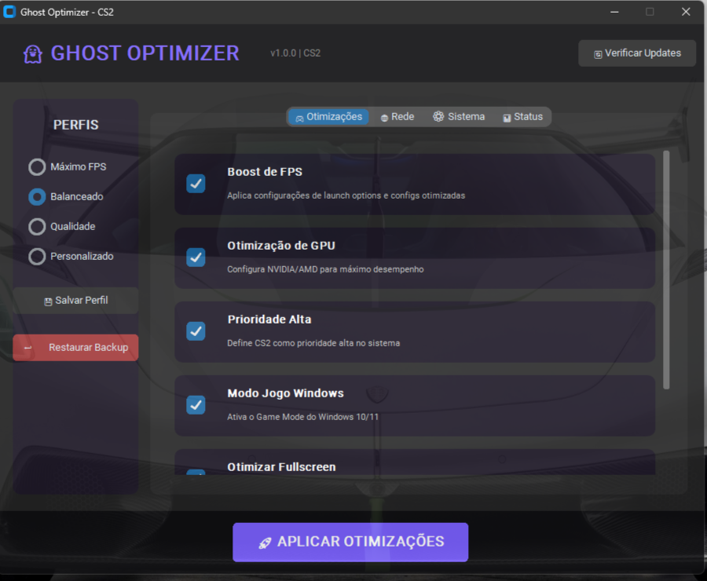
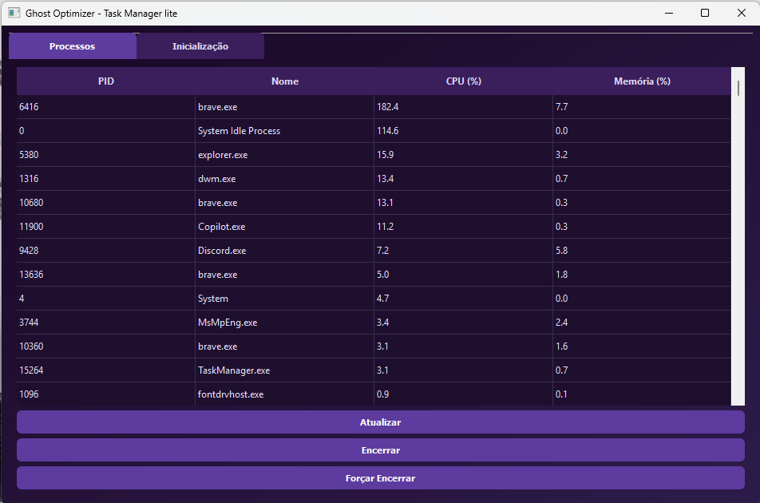

Meus Projetos

GP Optimizer
Servidor de otimização de jogos e sistema

CS2 Optimizer
Otimizações avançadas para CS2, garantindo FPS estável e baixo uso de CPU

Task Manager Lite
Task Manager moderno, leve e estiloso, com monitoramento e kill de processos